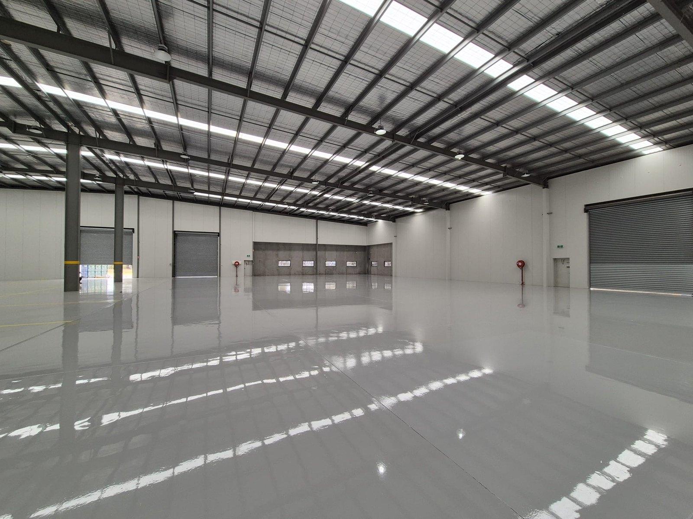
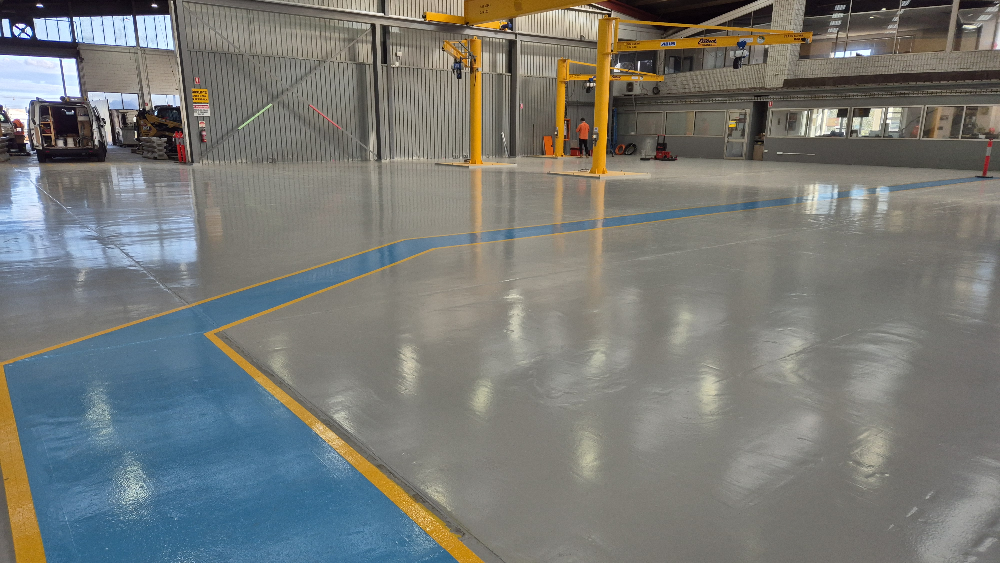

Improve staff morale
A clean, bright, cared-for workplace tells the team their environment matters. Standards tend to follow the floor.
Industrial flooring systems · Australia
Hard-wearing floors for workshops, heavy vehicle facilities and manufacturing sites. Easier to clean, safer to work on, and specified around how your site actually runs.
Why coat the floor?
A coating protects the concrete. It also changes how the floor looks, how it cleans and how it supports the people on it.
A clean, bright, cared-for workplace tells the team their environment matters. Standards tend to follow the floor.
Brighter surfaces, clear work zones and the right slip finish make hazards easier to see.
A sealed, smooth surface sweeps and washes clean, with nowhere for dust, oil or grime to embed.
A finished floor lifts the impression made on customers, suppliers and new recruits.
Clear routes and defined work areas keep movement efficient and housekeeping simple.
Stops dusting and contaminant penetration, and makes local wear easy to spot early.
Industrial applications
Start with the operational load, not a coating package. What runs over the floor decides the specification.
Oils, tools, jacks and light vehicle traffic. Service bays and walkways need a hard-wearing, easy-clean finish.
Trucks, buses, earthmovers and heavy plant load the slab far harder than a standard workshop. Point loads from jacks and stands, wide turning circles and steel tracks call for a thicker build, tougher repairs and stronger edge detail.
Chemicals, heat, washdown and fixed plant set the preparation, coating build and access plan.
Defined work areas and staged access, coated area by area so production keeps running.
Coating comparison
Both seal concrete and make cleaning easier. The right choice depends on how hard the floor works.
| Decision point | Single-pack epoxy | Two-pack epoxy |
|---|---|---|
| Best suited to | Low-traffic rooms and basic sealing. | Workshops, heavy vehicle bays and factory floors. |
| Traffic and wear | Light foot traffic. | Machinery, forklifts, heavy vehicles, constant daily wear. |
| Installation | Quicker and simpler to apply. | Mixed on site, longer installation. |
| Upfront cost | Lower, for light-duty projects. | Higher, for a stronger industrial system. |
| Long-term value | Good value when use genuinely stays light. | Better value where durability prevents early replacement. |
Long-term performance
Some areas always wear first. We build those areas for the load, then repair them locally instead of replacing the whole floor.
Forklift turns, service bays, wash areas, ramps and chemical zones.
Match preparation, coating build, topcoat and texture to the demand.
Refresh high-use sections before damage forces a full replacement.
Ask every quoter: which areas wear first, and can they be repaired without recoating the whole floor?
See a workshop floor 18 months after installation
Lifetime value
A cheap coating gets expensive when it shortens the replacement cycle or forces an unplanned shutdown.
Downtime planning
Three ways to get the floor coated without stopping more of the site than you can afford.
About 5-7 days before heavy traffic returns to the coated area.
Best fit: planned closure or slow periodOne bay or area at a time, so most of the floor stays available.
Best fit: a full closure is not practicalRated for forklift and heavy-equipment traffic within 24 hours of application.
Best fit: shorter return-to-service window*Indicative only. Cure times depend on the product, slab, temperature, humidity and site conditions. Confirm in the project specification.
Proof on live sites
Dealership, heavy vehicle and manufacturing sites that coated the floor and kept running.
Toyota · Dealership workshop · Video
Diamond grinding the old coating, a penetrating sealer treatment, then the new system and colour-separated service bays, filmed phase by phase.
See all videos
William Adams · Heavy machinery workshop · Dandenong VIC
Primer, squeegee coat, high-build epoxy and a polyurethane topcoat, finished with a blue and yellow pedestrian walkway to separate foot traffic from work areas.
Read the case studyFlooring process · Factory floor · Video
The three stages of the system going down over a working factory floor, condensed into a short walkthrough.
See all videosFrom the learning centre
Short, practical reads for operations, facilities and safety teams weighing up a floor coating.
Industrial flooring FAQs
Direct answers for operations, facilities and safety teams.
Explore the learning centreIt depends on preparation, moisture, traffic, chemicals and cleaning. Forklift turns and service bays wear first, so specify those areas separately and plan local recoating rather than waiting for the whole floor to fail.
Standard epoxy takes 3-5 days to apply, then about 5-7 days before heavy traffic returns. Fast-cure systems can take heavy traffic within 24 hours, subject to the system and site conditions.
There is no single correct finish. Wet zones, wash bays, ramps and pedestrian routes can each need a different texture. The trade-off is grip against cleanability, so hazard and cleaning method are assessed together.
Yes, with the right build. Trucks, buses and plant put concentrated point loads through jacks and stands, so those bays need a thicker system, stronger repairs and a topcoat that resists oils and fuels.
Compare preparation, repairs, coating build, number of coats, slip treatment, cure programme, exclusions, maintenance and warranty. A lower rate per square metre can cost more if the system fails early.
Build note: this section stays hidden on the live page until the quiz content is finished. The hero button that links here should be hidden with it.
Site quiz · in development
A short guided quiz to help you identify the likely coating route before booking a site assessment.
What works hardest on your floor?
Start with the site